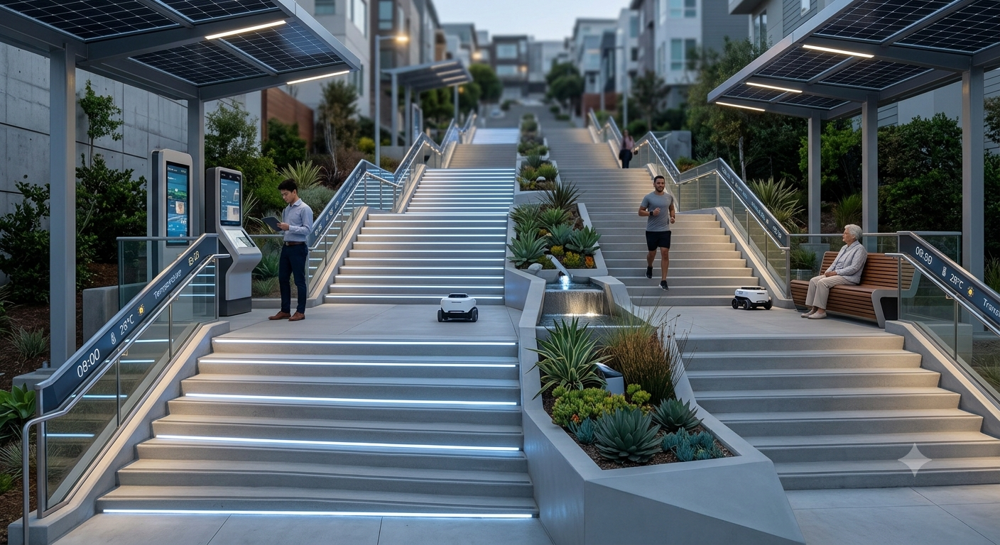
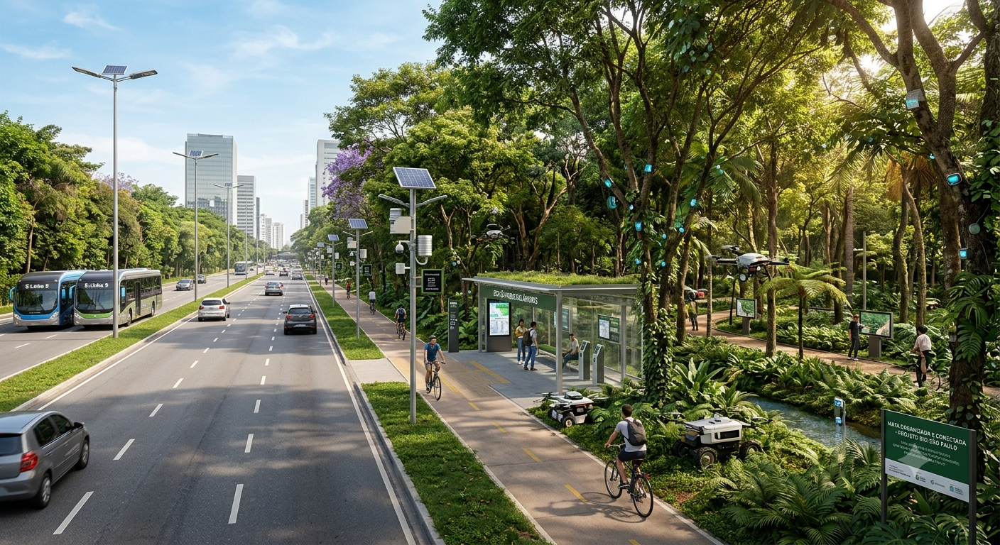

[escadão]
Como é hoje: [sujo e quebrado]
Como imagino em 2035: [limpo e estruturado]

Ver no Google Maps
Como é hoje: [sujo e quebrado]
Como imagino em 2035: [limpo e estruturado]

Ver no Google MapsComo é hoje: mato invadindo a calsada
Como imagino em 2035: mato podado

Ver no Google Maps[desenvolver um sistema colaborativi, ajudar leigos de TI, contribuir como puder]
[crie uma imagem futurista do bairro jardim sao raphael, zona sul de sao paulo, da qui a 10 anos. iclua tecnologia, arvores, jovens nas ruas e transporte moderno. estilo: realista e colorido]
[crie uma imagem de um escadão organizado e tecnologico]
[crie uma imagem de uma mata beira de avenida com mato horganizado e tecnologia]